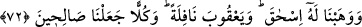

oraya göndererek âlemleri kemâlâta, dünya ve âhiret mutluluğuna erdiren hakîkî bereket
olan şerîatlarını orada neşretmiştir. Suyunu, ağacını, meyvesini, bol; halkının zengin ve
fakirinin rahat bir hayat sürdüğü yer kılmıştır.
Lut (a.s.), Tarah’in oğlu İbrahim (a.s.)’a îman etmiştir. Hz. Lût ise Tâhûr oğlu Târah
oğlu Hârân’ın oğludur. Âzer ise Târah’ın lakabıdır. Hârân ve İbrahim iki kardeşti. Kezâ
Hz. İbrahim’in amcasının kızı Sâre de ona îman etmişti. Sâre, İbrahim (a.s.)’ın büyük
amcası Hârân’ın kızı idi.
Hz. İbrahim, yanında Lût ve Sâre olduğu halde üçü, Allah’ın dini için kaçtılar, güven
içinde O’na kulluk etmek maksadıyla hicret ettiler. Harran’a vardılar ve orada Allah’ın
dilediği kadar kaldılar. Sonra oradan ayrıldılar, Filistin’e vardılar. Oradan da hicret
edip Mısır’a gittiler. Mısır’dan ayrıldıktan sonra Şam’a yöneldiler. Lut (a.s.)
Mü’tefike’de kaldı. Cenab-ı Hak kendisini oranın halkına peygamber gönderdi.
Rasûlullah (s.a.)’ın şöyle buyurduğu rivâyet edilmiştir: “Hicretten sonra hicret
vardır. Yeryüzünün en hayırlıları İbrahim’in hicret ettiği yere hicret edenlerdir.”[187]
Burada Nebî (a.s.) “ikinci hicret” ile Şam’a hicreti kasdetmiştir. Bundan maksad,
insanları orada ikâmete teşviktir. Bir hadiste de şöyle buyrulmuştur: “Beytü’l-makdis,
haşr ve neşrin olacağı yerdir. Şam ise memleketler içinde Allah’ın seçtiği yerdir,
oraya seçkinler varır.”[188] Merfû bir hadiste ise: “Size Şam’ı tavsiye ederim.”[189]
buyrulmuştur.
Ey Sa‘dî! Vatan sevgisine dâir sahih hadis varsa da
Kişinin, burada doğdum diye sıkıntı içinde ölmesi doğru değildir
Mesnevî’de ise şöyle der:
Yârimin meskeni, şâhımın şehridir (Buhârâ)
Âşık için vatan sevgisi işte budur
72. Ona (İbrahim’e), İshak’ı ve fazladan bir bağış olmak üzere Ya’kub’u
lütfettik; herbirini sâlih insanlar yaptık.
Bereketli topraklara vardıktan sonra “Ona” İbrahim’e kendi sulbünden olmak üzere
Sâre’den “İshâk’ı” verdik. İshâk, İbrânîce’de ‘çok gülen’ demektir. Kezâ İsmâîl de
‘Allah’a itâat eden’ demektir.
“Ve fazladan bir bağış olmak üzere” oğlunun oğlu “Ya’kub’u lütfettik;” Ona (yâni
İbrahim’e) ilâve olarak Yâkub’u verdik.
Yâkûb’a bu adın verilmesi, kardeşi Iys’ın akabinde doğması ya da onun topuğundan